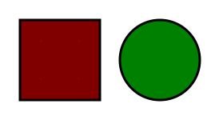

О системе образования в Японии, высоком уровне учебных заведений свидетельствует стремительный рост государства в сфере технических разработок и новаций. Страна восходящего солнца кардинально отличается от европейских государств культурой, обычаями, образом жизни. Отпечаток на образовательную систему Японии наложила политика изоляционизма. В конце 19 века японское правительство проводило реформы в стране, и образование не осталось в стороне. Сегодня система обучения Японии имеет схожие черты с Европой.
Образование Японии делиться на четыре уровня: дошкольное, начальное, среднее и высшее. Есть особенности: учебный год делится на триместры, начинаясь в апреле. В школу ученики ходят 6 дней в неделю, но в месяце две субботы – обязательно выходные.
Дошкольное
Для дошкольного воспитания в стране открыты хоикуэны – центры по уходу за малышами. Сюда приводят деток с 3 месяцев, но попасть удается не всем желающим. Городские власти выбирают малышей из неблагополучных, малообеспеченных семей. Обязательным условием для родителей является занятость более 4 часов в день. В Центре детей ничему не обучают, обеспечивается лишь 12-часовой присмотр
Японские детские сады – ётиэны посещают детки, начиная с трехлетнего возраста. С этого момента воспитанники познают азы науки. Педагоги обучают письму, чтению, арифметике. Развитие коммуникативных способностей начинается с детского сада. С этим связан перевод ребенка через 6 месяцев в другую группу, он должен уметь адаптироваться к новому коллективу и воспитателю. Работают садики в Японии до 14 часов.
На двух дошколят приходится один воспитатель. Дети чувствуют себя, как дома: их баюкают, обнимают, берут на руки. Уделяется внимание и питанию, для аллергиков разрабатывается специальное меню.
Дошкольное образование в Японии – платное. По форме собственности делят на частные и государственные садики. Разницы между ними почти нет, только в ежемесячной стоимости. Уровень подготовки воспитателей, оснащение и условия высокие повсеместно.
По заданию здесь просто находятся фигуры.
